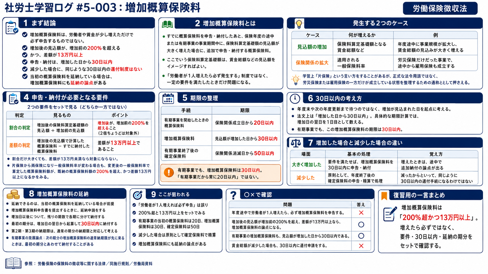

今日のテーマ
労働保険徴収法における、増加概算保険料。
今日は、概算保険料を申告・納付した後、保険年度または有期事業の事業期間中に見込額などが大きく増えたときに出てくる「増加概算保険料」を整理した。
まず結論
増加概算保険料は、労働者や賃金が少し増えたら必ず申告するものではない。一定の増加要件を満たしたときに、追加で申告・納付する概算保険料。
- 賃金総額などの見込額が、増加前の見込額の200%を超える
- かつ、増加後の見込額で計算した概算保険料と、すでに納付した概算保険料との差額が13万円以上
- 申告・納付は、増加した日から30日以内
- 減少した場合は、同じように30日以内で還付を受ける制度ではない
- 当初の概算保険料を延納している場合は、増加概算保険料にも延納の論点がある
増加概算保険料とは
増加概算保険料は、すでに概算保険料を申告・納付したあと、保険年度または有期事業の事業期間中に、保険料算定基礎額の見込額などが大きく増えた場合に、追加で申告・納付する保険料。
ここでいう保険料算定基礎額は、ざっくり言えば労働保険料を計算する土台になる見込額のこと。中心は賃金総額の見込額だけれど、第一種・第二種・第三種特別加入保険料の算定基礎額の見込額も対象になる。
大事なのは、「労働者が1人増えたら必ず発生する」という制度ではないこと。増加の程度が一定以上大きく、さらに保険料の差額も一定額以上になる場合に、増加概算保険料の申告・納付が必要になる。
なぜ追加納付が必要になるのか
概算保険料は、最初に見込額をもとに納める。ところが保険年度や有期事業の途中で事業規模が大きくなり、当初の見込みから大きく外れると、確定精算まで待つ間の不足額が大きくなってしまう。
そのため、一定以上の増加が見込まれる場合には、その年度の途中で追加分を納める。これが増加概算保険料の基本的な考え方。
発生する2つのケース
増加概算保険料は、大きく分けると次の2つの流れで出てくる。
| ケース | 何が増えるか | 例 |
|---|---|---|
| 見込額の増加 | 保険料算定基礎額となる賃金総額や特別加入保険料の算定基礎額 | 年度途中に事業規模が拡大し、賃金総額の見込みが大きく増える |
| 片保険から両保険へ | 適用される一般保険料率 | 労災保険だけだった事業で、途中から雇用保険も成立する |
学習上、「片保険」という言い方をすることがある。ただし、これは正式な法令用語というより、労災保険または雇用保険の一方だけが成立している状態を整理するための通称として扱いたい。
一方で、政府が一般保険料率や特別加入保険料率を引き上げた場合は、徴収法17条の「概算保険料の追加徴収」。これは増加概算保険料ではなく、政府が金額と納期限を通知する別の話として分ける。
申告・納付が必要となる要件
賃金総額などの見込額が増加した場合は、次の2つをセットで見る。
| 判定 | 見るもの | ポイント |
|---|---|---|
| 割合の判定 | 増加後の保険料算定基礎額の見込額 ÷ 増加前の見込額 | 増加後が、増加前の200%を超えること。「2倍ちょうど」ではなく、200%を超える。 |
| 差額の判定 | 増加後の見込額で計算した概算保険料 − すでに納付した概算保険料 | 差額が13万円以上であること。 |
ここは「または」ではなく、基本は両方を見る。割合だけ大きくても、差額が13万円未満なら増加概算保険料の申告・納付の対象にはならない。
片保険から両保険になり、一般保険料率が変わるケースでも、差額13万円以上という視点が出てくる。労災保険だけだった事業が、途中から雇用保険も成立するような場面は、この論点として押さえる。
このケースでは、変更後の一般保険料率で算定した概算保険料額が、すでに納付した概算保険料額の200%を超え、かつ、差額が13万円以上になるかを見る。
30日以内の考え方
増加概算保険料は、「30日以内に申告・納付」とだけ覚えると少し危ない。
賃金総額などの見込額が増加した場合は、法文上は「その日から30日以内」に、増加概算保険料申告書を提出し、差額を納付する。
具体的な日数計算では初日不算入で考えるので、増加した日の翌日を1日目として数える。たとえば3月5日に増加したなら、3月6日を1日目として30日目が4月4日になる。
片保険から両保険になるケースでは、一般保険料率が変更した日が基準になる。有期事業の増加概算保険料も30日以内であり、通常の概算保険料の20日以内や、確定保険料の50日以内とは別に見る。
労働者や賃金が減った場合との違い
増加した場合と減少した場合を同じように考えないこと。ここはかなり引っかかりやすい。
| 場面 | 基本の処理 | 覚え方 |
|---|---|---|
| 大きく増加した | 要件を満たせば、増加概算保険料を30日以内に申告・納付 | 増えたときは、途中で追加納付の論点が出る |
| 減少した | 原則として、年度終了後などの確定保険料の申告・精算で処理 | 「減少概算保険料」という法定制度があるわけではない |
減少した場合は、増加した場合と同じように30日以内で概算保険料を減らす制度としては整理しない。ただし、途中で絶対に何も調整できないという意味ではなく、基本は確定保険料の申告・精算で見る。
納付書と納入告知書
試験対策上の補足として、納付書と納入告知書の違いも軽く整理しておく。ただし、「自主的なら納付書、行政が関われば納入告知書」と単純に二分しない。
- 印紙保険料以外の労働保険料などは、納入告知書によるものを除き、原則として納付書で納付する
- 納入告知書は、施行規則38条5項に列挙された通知で使われる
- 行政が関与する場合に、必ず納入告知書になるわけではない
増加概算保険料は、事業主が申告・納付する流れなので、納付書を使うと押さえる。
増加概算保険料の延納
増加概算保険料にも延納の論点がある。
ただし、単独でいきなり延納できるというより、当初の概算保険料について延納している事業主が、増加概算保険料申告書を提出するときに延納申請をする、という流れで見る。
- 延納できるのは、当初の概算保険料を延納している場合が前提
- 増加概算保険料申告書を提出するときに、あわせて延納を申請する
- 増加した日以後について、残りの期に分けて納付する
- 増加概算保険料の額を、増加日以後の延納に係る期の数で割り、各期分とする
- 増加概算保険料自体について、40万円・20万円・75万円といった独立した金額要件は設けられていない
- 最初の期分は、増加した日の翌日から起算して30日以内に納付する
- その後の期分は、施行規則30条2項の納期限で見る
たとえば7月15日に増加が見込まれた場合、「7月分だけを単独で見る」と丸暗記するより、増加日の属する期を最初の期として、そこから後ろの期へ分ける、と考えた方が安全。
前に勉強した「継続事業の概算保険料の延納」「有期事業の概算保険料の延納」とつながる論点なので、延納の期分と納期限をセットで見返したい。
継続事業の一括に関する整理例
学習メモでは、継続事業の一括に関する例も出てきた。
継続事業の一括の認可があると、指定事業以外の事業に係る保険関係は消滅する。一方で、それらの事業に使用される労働者は、指定事業に使用される労働者とみなされる。
そのため、消滅した事業については確定保険料を申告・精算する。指定事業側では、労働者が指定事業に使用されるものとみなされる結果、保険料算定基礎額の見込額が大きく増えることがある。
指定事業の見込額が増加要件を満たせば、指定事業側で増加概算保険料を申告・納付する。「一括していたから全部まとめて同じ処理」と見ないで、保険関係の消滅と、指定事業側の増加を分けて見るのがポイント。
有期事業の特殊な納期限
発展論点として、有期事業では納期限の順番が少し不思議に見える場面がある。
延納中の有期事業で増加概算保険料が発生すると、次の期分の増加概算保険料の通常納期限が、最初の期分の増加概算保険料の納期限より先に来ることがある。
この場合、一緒に納付するのは当初の概算保険料ではない。最初の期の次の期分の増加概算保険料を、最初の期分の増加概算保険料とあわせて納付する。
| 例 | 納期限の見え方 | 整理 |
|---|---|---|
| 3月5日に増加が見込まれた | 最初の期は12月1日〜3月31日 | 最初の期分の増加概算保険料は、3月6日から30日以内で4月4日まで |
| 次の期は4月1日〜7月31日 | 次の期分の増加概算保険料の通常納期限は3月31日 | 次の期分の納期限が、最初の期分より先に来る |
| 逆転した場合 | 次の期分の増加概算保険料も4月4日まで | 最初の期分の増加概算保険料とあわせて納付する |
ここは基本論点というより、延納のルールをかなり細かく聞かれたときの発展ポイントとして置いておく。
ここが狙われる
- 労働者が増えれば必ず申告する、は誤り
- 増加後の見込額が、増加前の200%を超えるかを見る
- 差額13万円以上も必要
- 30日以内の起算日をあいまいにしない
- 減少した場合に、30日以内の還付手続があるわけではない
- 増加概算保険料にも延納の論点がある
- 増加概算保険料については、通常の概算保険料や確定保険料のような認定決定の規定が置かれていない
- 納付書と納入告知書は異なる
○×で確認
| 問題 | 答え | 理由 |
|---|---|---|
| 年度途中で労働者が1人増えたら、必ず増加概算保険料を申告する。 | × | 一定の増加要件と差額要件を満たす必要がある。 |
| 増加後の見込額が増加前の200%を超え、差額が13万円以上なら、増加概算保険料の論点になる。 | ○ | 割合と差額をセットで見る。 |
| 賃金総額が減少した場合も、30日以内に還付申請をする。 | × | 原則として年度終了後の確定保険料の申告・精算で処理する。 |
| 当初の概算保険料を延納している場合、増加概算保険料にも延納の論点がある。 | ○ | 施行規則30条で、増加概算保険料の延納が定められている。 |
| 増加概算保険料申告書を提出しない場合、政府が増加概算保険料を認定決定する規定がある。 | × | 概算保険料や確定保険料と違い、増加概算保険料には認定決定の規定が置かれていない。 |
今日のまとめ
増加概算保険料は、概算保険料を申告・納付した後の大きな増加に対応するための追加の概算保険料。
ただし、労働者や賃金が少し増えたら自動的に発生するわけではない。増加後の見込額が増加前の200%を超えること、そして保険料差額が13万円以上であることをセットで見る。
さらに、減少した場合との違い、30日以内の起算日、延納の期分、有期事業での納期限の見え方までつながってくる。徴収法らしく、数字と期限をかなり丁寧に分けて覚えたい。
復習用の一言まとめ
増加概算保険料は「200%超かつ13万円以上」。増えたら必ずではなく、要件・30日以内・延納の期分をセットで確認する。